この後ご予定がある夜に
ショートコース
全5章・テーブル席・1〜8名
「この
¥14,800税込
空席を見る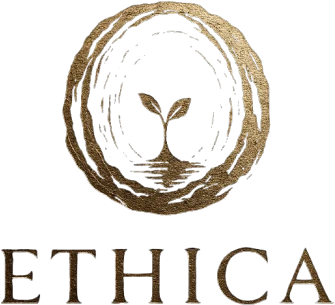
銀座 ETHICA | 二ツ星MAZ出身シェフのイノベーティブ（ペルー料理×フレンチの技法）・ミシュラン3年連続掲載
Our Story
高級レストランに
料理で、
その
早朝から
それでも、
南国の
人生の
と
まだ誰も見たことのない景色を、料理で描きたいシェフ。
人生を豊かにする体験を追い求めるオーナー。
二人の
料理は
こうして
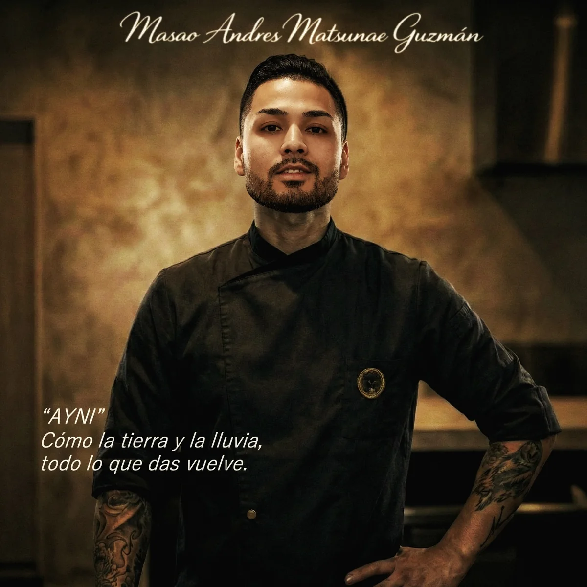
Executive Chef
物語に
MASAO ANDRÉS MATSUNAE GUZMÁN
MAZ
Philosophy
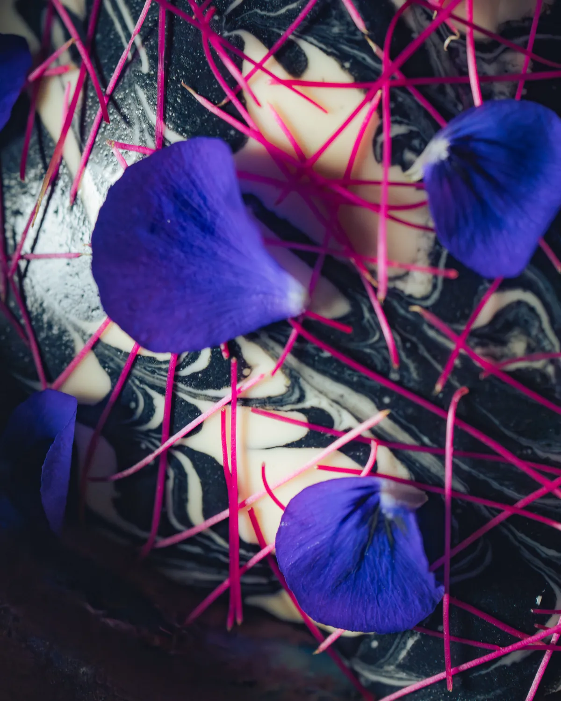
メニューに
時空の
Chapters
1皿目は
上の
1皿目、38億年前
最初の
↓35億年すすむ
2皿目、3億年前
背骨を
↺43億年さかのぼる
3皿目、46億年前
さらに
↓41億年すすむ
4皿目、5億年前
植物が
↓3億年すすむ
5皿目、2億年前
恐竜の
↓1億3400万年すすむ
6皿目、6600万年前
恐竜の
↓約6600万年すすむ
7皿目、500年前
500年前、
↺約4億年さかのぼる
8皿目、4億年前
最後に
↓約4億年すすむ
いま
旅の
ETHICA コレクション・2026年秋の
Plates
これまでに
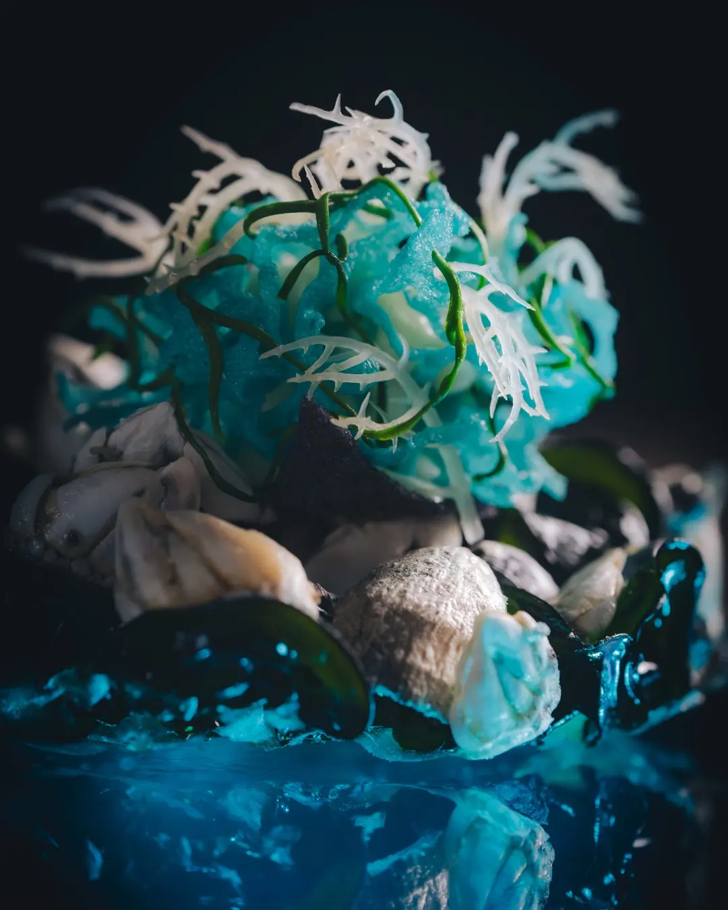
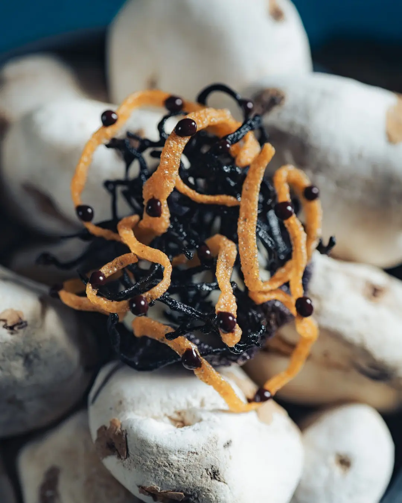
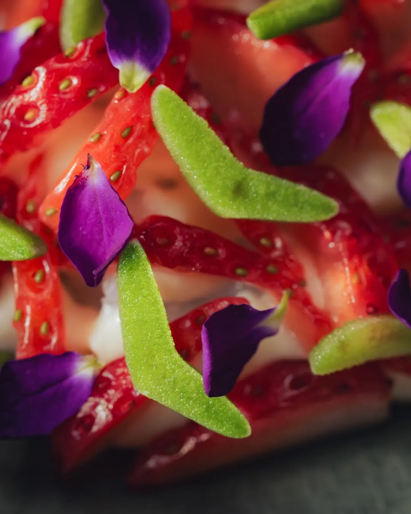
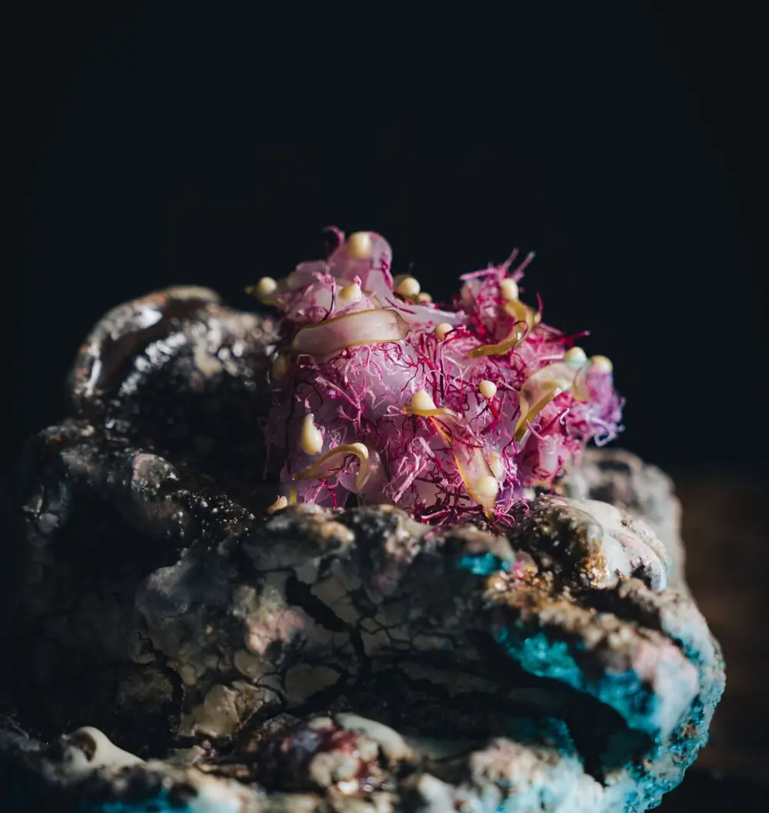
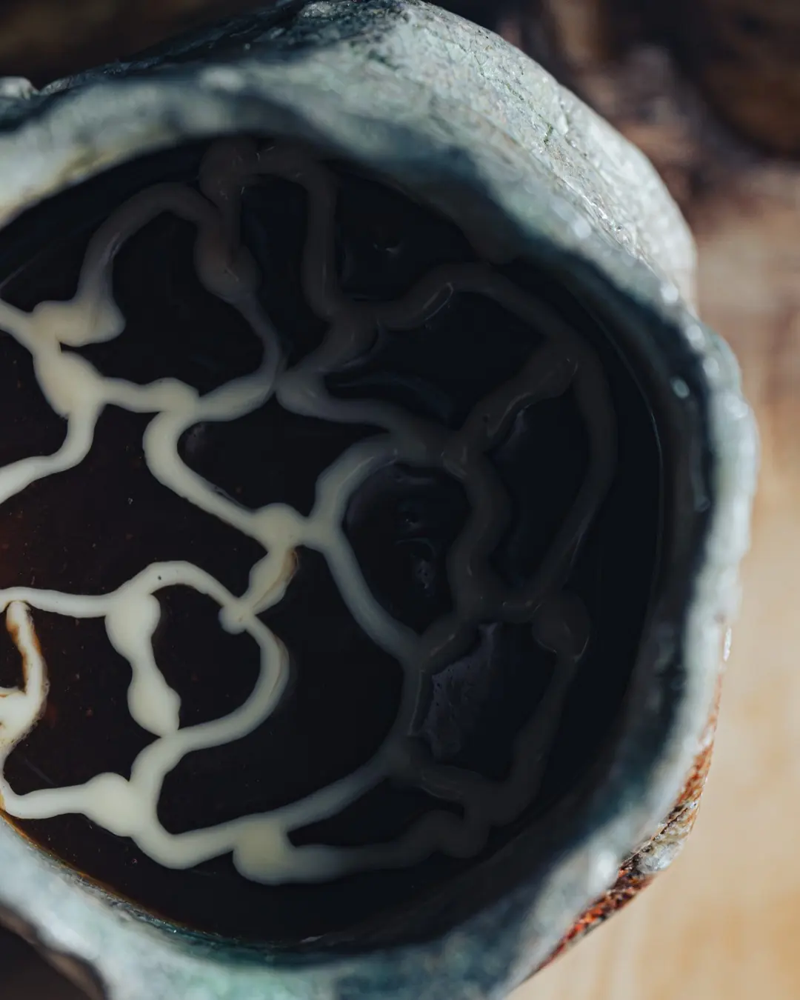
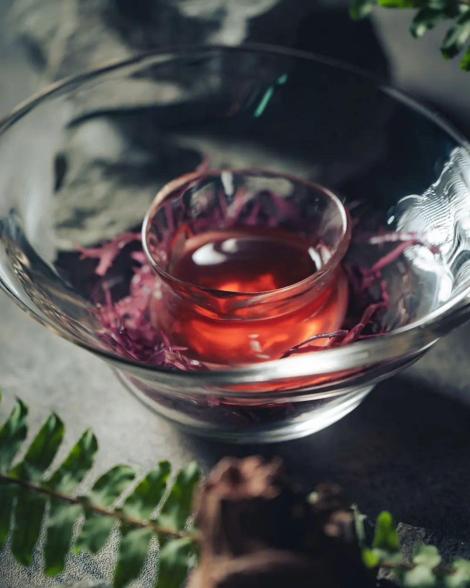
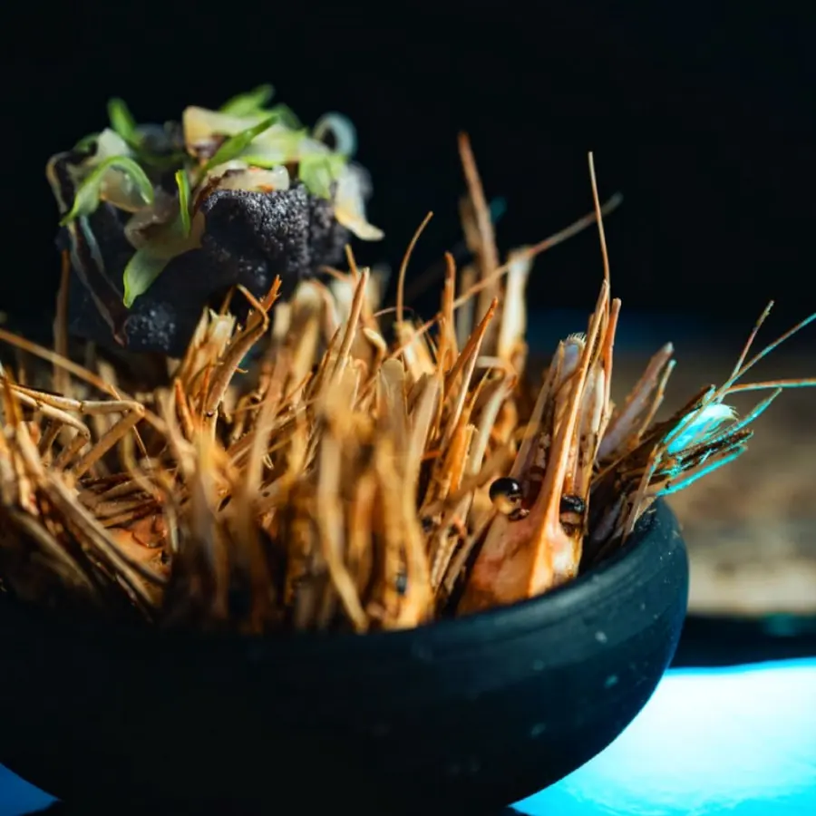
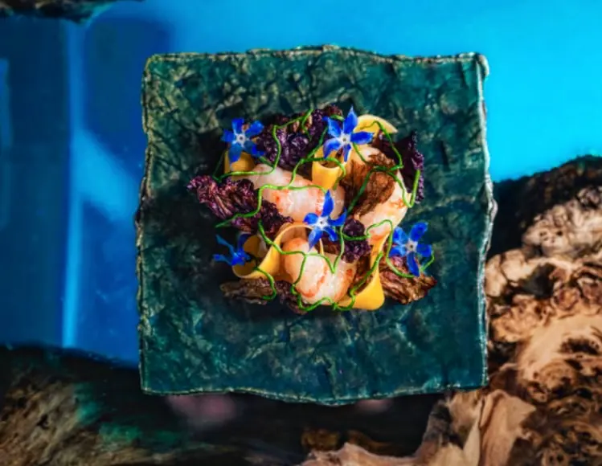
The Cave
岩壁に
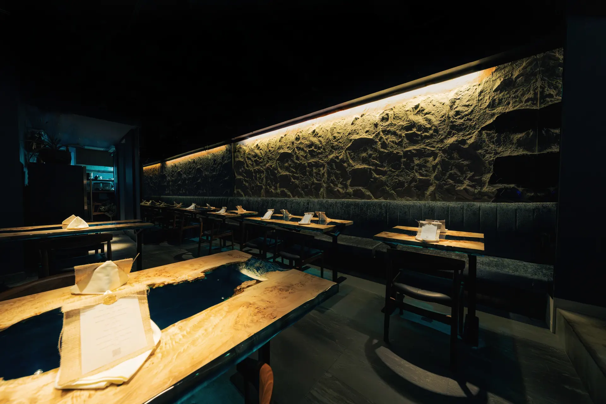
Courses
ミシュランガイド東京 3年連続掲載
迷われたら、
この後ご予定がある夜に
全5章・テーブル席・1〜8名
「この
¥14,800税込
空席を見るはじめての方に
全8章・テーブル席・1〜8名
地球46億年の
¥19,800税込
この旅の空席を見る特別な夜に
全9章・テーブル席・1〜8名
コレクションの
¥24,800税込
空席を見る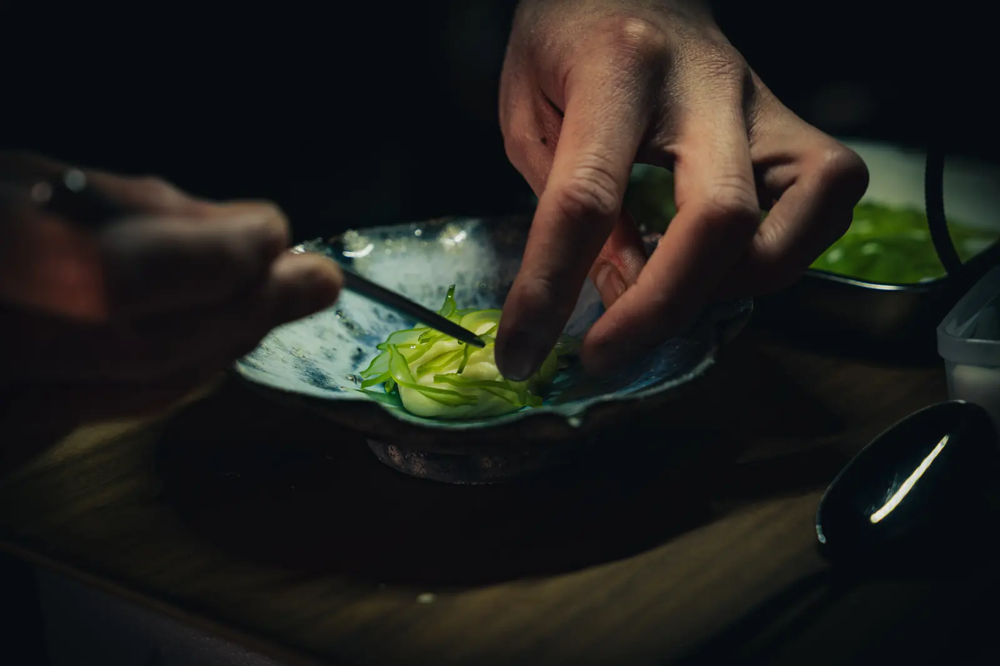
デート・記念日に・1〜2名
全9章・キッチンの
キッチンの
¥27,800税込
カウンターの空席を見る予約ページでは
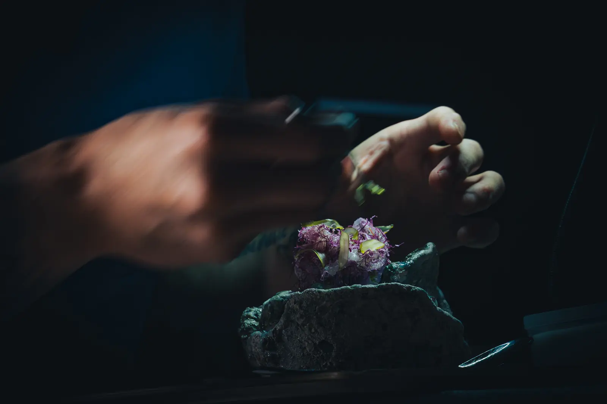
会食・接待に・2〜4名
全9章・キッチンの
キッチンの
¥29,800税込
個室の空席を見る予約ページでは
誕生日・記念日に・2名〜
全9章・テーブル席・2名〜・メッセージプレート付き
グランド・コレクションの
¥25,200税込
記念日コースの空席を見るベジタリアンの方に・1〜8名
全8章・テーブル席・1〜8名
ETHICA の
¥19,800税込
空席を見る料金は
※
Q&A
ETHICA の
キッチンの
手描きの
はい。
アレルギーは、
20名様までの
Access
ミシュランガイド東京 3年連続掲載
この